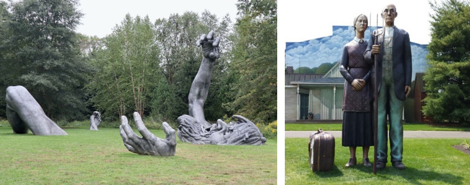

NYC Skyline from across the Hudson River
Statue of Liberty & Ellis Island
"The Statue of Liberty Enlightening the World" was a gift of friendship from the people of France to the United States and is recognized as a universal symbol of freedom and democracy. The Statue of Liberty was dedicated on October 28, 1886. It was designated as a National Monument in 1924. Employees of the National Park Service have been caring for the colossal copper statue since 1933.
Ellis Island is a federally owned island in New York Harbor that was the busiest immigrant inspection station in the United States. From 1892 to 1954, nearly 12 million immigrants arriving at the Port of New York and New Jersey were processed there under federal law.

Thomas Edison National Historical Park
Where Modern America Was Invented. Thomas Edison’s home and laboratory are a step back in time, when machines were run by belts and pulleys and music was played on phonographs. Where to the uninformed passerby, the buildings betray little evidence of the industries they once started. Discover where America’s greatest inventor changed our world forever.
Iconic sites in Manhattan
Manhattan is the most densely populated of New York City’s 5 boroughs. It's mostly made up of Manhattan Island, bounded by the Hudson, East and Harlem rivers. Among the world’s major commercial, financial and cultural centers, it’s the heart of “the Big Apple.” Its iconic sites include skyscrapers such as the Empire State Building, neon-lit Times Square and the theaters of Broadway.
Fifth Avenue, NYC
One of the most luxurious stretches of retail in the country, Fifth Avenue is the main artery of New York City's shopping scene, having welcomed a steady stream of fashion mavens for over 100 years. From catwalk copycats to bargain hunters, buyers flock to this section of Midtown (between 49th and 60th streets) to shop for it all.
SoHo NYC
Known for its beautiful cast iron architecture, "South of Houston" or SoHo was once a mecca for artists and galleries. While some creative types still remain in the neighborhood, today this downtown district is a hub for both chain retailers and independent boutiques.
Williamsburg, NYC
Known for its beautiful cast iron architecture, "South of Houston" or SoHo was once a mecca for artists and galleries. While some creative types still remain in the neighborhood, today this downtown district is a hub for both chain retailers and independent boutiques.
American Dream
American Dream is a retail and entertainment complex in the Meadowlands Sports Complex in East Rutherford, New Jersey. Feel the excitement of making memories again at the newest place for indoor family shopping and entertainment.
The Mills at Jersey Gardens
The Mills at Jersey Gardens is New Jersey’s largest outlet and value retail center with over 200 stores all under one roof!
Staten Island Ferry
The Staten Island Ferry is one of the last remaining vestiges of an entire ferry system in New York City that transported people between Manhattan and its future boroughs long before any bridges were built. In Staten Island, the northern shores were spiked in piers, competing ferry operators braved the busy waters of New York harbor.
Sleepy Hollow and the Rockefeller Estate
Sleepy Hollow is a village in New York State’s Hudson Valley. It’s known as the setting of Washington Irving’s “The Legend of Sleepy Hollow.” The author is buried in Sleepy Hollow Cemetery. Kykuit, the Rockefeller family’s opulent hilltop estate, has gardens with 20th-century sculptures. Northeast, vast Rockefeller State Park Preserve includes a network of carriage roads traversing woodlands, fields and streams.
Grounds for Sculpture
Grounds For Sculpture provides an outdoor haven that aims to inspire, thrill, and rejuvenate all who visit.
Six Flags Great Adventure and Hurricane Harbor
Six Flags Great Adventure is an amusement park located in Jackson, New Jersey. Owned and operated by Six Flags, the park complex is situated between New York City and Philadelphia and includes a water park named Hurricane Harbor. It is the second-largest theme park in the world.
Sandy Hook
Spanning 27,000 acres from Sandy Hook in New Jersey to Breezy Point in New York City, the park is both the gateway from the ocean into New York Harbor, and the gateway to the National Park Service for millions of visitors every year. Gateway offers green spaces and beaches alongside historic structures and cultural landscapes. Every day, Gateway is open for you to explore, envision, and enjoy!
Oktoberfest events in the area (New Jersey | New York )